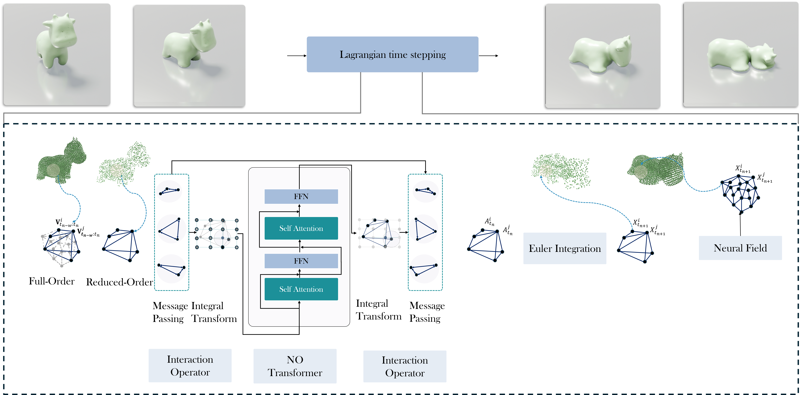
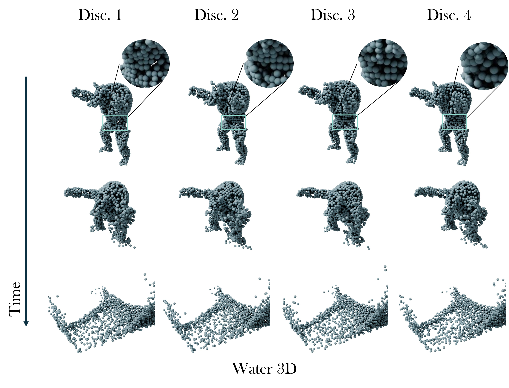

← Back to Home
Reduced-Order Neural Operators: Learning Lagrangian Dynamics on Highly Sparse GraphsHrishikesh Viswanath, Yue Chang, Julius Berner, Peter Yichen Chen, Aniket Bera
Purdue University, West Lafayette, IN, USA AbstractWe propose accelerating the simulation of Lagrangian dynamics, such as fluid flows, granular flows, and elastoplasticity, with neural-operator-based reduced-order modeling. While full-order approaches simulate the physics of every particle within the system, incurring high computation time for dense inputs, we propose to simulate the physics on sparse graphs constructed by sampling from the spatially discretized system. Our discretization-invariant reduced-order framework trains on any spatial discretizations and computes temporal dynamics on any sparse sampling of these discretizations through neural operators. Our proposed approach is termed Graph Informed Optimized Reduced-Order Modeling or GIOROM. Through reduced order modeling, we ensure lower computation time by sparsifying the system by 6.6-32.0×, while ensuring high-fidelity full-order inference via kernel ROM. We show that our model generalizes to a range of initial conditions, resolutions, and materials.  How it works: The overall architecture of GIOROM. The neural operator Gθ predicts the acceleration of a Lagrangian system Atk at time tk from the past w velocity instances Vtk−w:k. The positions are derived through Euler integration. The kernel-ROM is used to efficiently evaluate the deformation field at arbitrary locations.
Performance of GIOROMThe videos below highlight the performance across different material settings and regimes.
Discretization InvarianceOur approach yields consistent results across diverse spatial discretizations.  BibTeX |